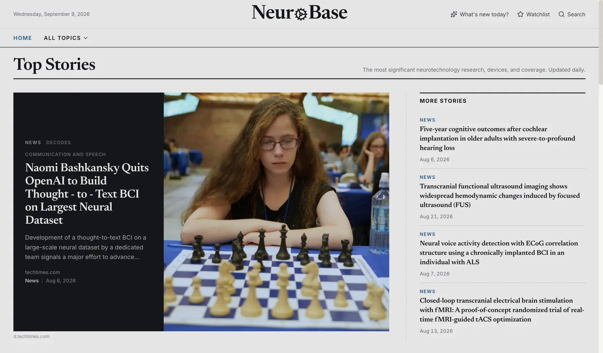

Four pathways in neuromodulation
Four research proposals came out of the chapter's first cohort. Read together, three of them independently identified the same central technical problem: recovering a neural signal in real time while a stimulus is actively contaminating the recording, then adjusting that stimulus based on what is sensed.
Rather than run four separate teams, the chapter is organized as one shared platform with four application tracks. A core team builds the real time sensing, artifact rejection, and control loop framework. Each track applies it to a different condition and a different stimulation modality. Solving the shared problem once unblocks all four.
Track A: Gamma sensory entrainment for early Alzheimer's disease
Synchronized 40 Hz light and sound stimulation reduces amyloid and tau pathology in animal models and has carried a fixed frequency device to a pivotal human trial. Every deployed system is open loop: it delivers a fixed frequency on a fixed schedule with no readout of whether the brain is actually entraining, and individual response is highly variable. This track builds the closed loop version, tracking each participant's gamma response during a session and adapting stimulation to it.
Platform and sensing
Build the synchronized light and sound stimulator, the EEG chain, and the controller between them, then recover the gamma response while the stimulus is still running.
Control policy
Develop and benchmark the policy that moves frequency and intensity within a session, against a fixed frequency baseline.
Feasibility pilot
Compare adaptive stimulation against fixed 40 Hz and sham in healthy adult volunteers, measured on gamma target engagement rather than on a cognitive endpoint.
Track B: Closed-loop temporal interference stimulation for Parkinson's disease
Transcranial temporal interference stimulation reaches deep brain structures without surgery by crossing two kilohertz range fields through scalp electrodes. Adaptive deep brain stimulation, which titrates stimulation to the patient's own beta oscillations, received its first FDA approval in 2025, but requires an implant. Every human temporal interference study to date has run open loop. This track combines them into the first noninvasive adaptive deep brain neuromodulation system.
Platform and sensing
Build the steerable multi channel stimulator and a high density EEG front end that can recover the beta biomarker during kilohertz stimulation. Validate focus and steering in individualized head models and in a head phantom.
Target and policy
Determine which noninvasive signal tracks motor state best under stimulation, then benchmark control policies in a subject specific model in the loop testbed before running any of them on people.
Crossover pilot
Randomized, double blind, sham controlled crossover in Parkinson's disease comparing closed loop, open loop and sham, on motor score and on suppression of the biomarker.
Track C: Pre-ictal detection and focused ultrasound for drug-resistant epilepsy
Roughly a third of people with epilepsy do not achieve seizure freedom on medication, and fewer than one percent of those patients are ever referred for surgery. This track develops seizure prediction and focus localization from scalp EEG and heart rate variability, then uses that prediction to target low intensity focused ultrasound, with adenosine mediated inhibition as the candidate mechanism.
Detection and localization
Train a model on scalp EEG and heart rate variability to detect pre-ictal onset and localize the focus, using intracranial recordings as ground truth where they exist.
Parameter selection
A second model takes that detection and localization and selects ultrasound parameters within fixed safety limits.
Mechanism
Test whether the selected parameters release enough adenosine to suppress seizure activity, and whether the suppression disappears under A1 receptor blockade.
Closed loop
Integrate detection and stimulation into one controller and validate it on real time physiological input with the hardware in the loop.
Track D: Hyperflow, driving and measuring glymphatic clearance
The glymphatic system is the brain's sleep dependent waste clearance pathway, carrying amyloid beta, tau, and alpha synuclein out of neural tissue. Low intensity focused ultrasound enhances that clearance in animal models through the TRPV4-AQP4 pathway with no evidence of tissue damage, while the diffusion MRI index most of the field reports has been shown to be confounded by fibre geometry rather than reflecting perivascular flow. No completed human clearance trial exists yet. This track treats measurement and intervention as one loop: drive clearance, measure whether it actually moved, and tune the next session on that readout.
Measurement stack
Anchor on a contrast or physics based glymphatic MRI readout paired with plasma p-tau217, and demote the diffusion index to an exploratory secondary rather than an endpoint.
Subject specific modelling
Turn an individual scan into a simulation of that person's CSF and glymphatic flow, so a session reports how much fluid moved instead of a proxy for it.
Sleep gated drive
Deliver closed loop focused ultrasound in the slow wave window where clearance naturally peaks, and find the parameters that raise flow without heating tissue.
First population
Run the pilot in idiopathic intracranial hypertension, where the clearance failure is clearest in the smallest study, before carrying a positive readout into early Alzheimer's disease.
Beyond the four tracks
Two pieces of work sit outside the platform. Neither is a neuromodulation track: one is a tool the chapter already uses, and one is an imaging direction.
NeuroBase, an open index of neurotechnology
NeuroBase is an automatically updated, open index of the neurotechnology field. It carries research ranked by field normalized citation impact, trials pulled from ClinicalTrials.gov with phase and enrollment, device decisions from the openFDA database, private financing parsed out of SEC Form D filings, and daily news. It was built by a chapter member and is live at neurobase-live.vercel.app.
What it does not do yet is the interesting part. Search is keyword matching, so it returns what matches rather than what matters. Nothing in it models significance, so the index cannot tell a result that moves the field from one that repeats it. There is no per reader view, so everyone sees the same page. And what it holds on any individual company is thin. Those four gaps are the work.

Transcranial ultrasound localization microscopy in the operating room
Ultrasound localization microscopy infuses microbubbles, gas cores in lipid shells already approved as a clinical contrast agent, into the bloodstream and tracks them one at a time as they pass through the vasculature. Ultrasound normally cannot separate two things closer together than about a wavelength. A single bubble blurs to that width, but its centre can be fitted far more precisely, so accumulating millions of positions builds a vascular map finer than the wavelength that made it.
In June 2026 Aleph Neuro published the first three dimensional ULM image of a living human brain acquired through an intact skull, and released the reconstruction pipeline and the dataset under an MIT licence.
The skull is the hard part of that result, and an operating room is the one place it is already open. Intraoperative ultrasound is routine in neurosurgery: it shows anatomy, it checks how much tumour is left, and it corrects the drift that makes preoperative MRI unreliable once the brain has shifted under an open skull. What it does not give the surgeon is the microvasculature. The question is whether the open pipeline can be adapted to that setting, where there is no skull left to correct for.